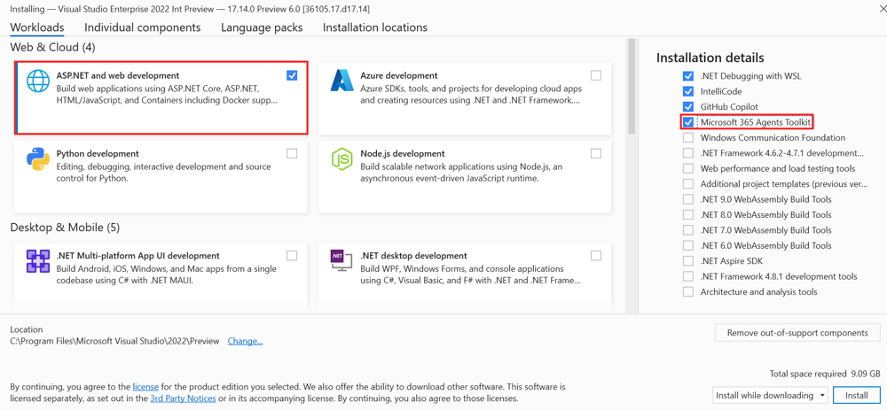

ラボ BMA0 - 前提条件
このラボでは、パスを通して開発するカスタムエンジン エージェントをビルド、テスト、およびデプロイするための開発環境をセットアップします。
このラボで学習する内容:
- Microsoft 365 環境をセットアップする
- Microsoft 365 エージェント Toolkit を使用して Visual Studio 2022 をインストールおよび構成する
- 必要なリソースを作成できるよう Azure 環境を準備する
注意事項
これらのサンプルおよびラボは、学習およびデモンストレーションを目的としており、運用環境での使用を意図したものではありません。運用環境で使用する場合は、必ず運用レベルの品質にアップグレードしてください。
注
独自のカスタムエンジン エージェントをインストールして実行するには、管理者権限を持つ Microsoft 365 テナントが必要です。カスタムエンジン エージェントをテストするだけであれば、Microsoft 365 Copilot ライセンスは不要です。
演習 1 : Microsoft Teams の設定
Step 1: Teams のカスタム アプリのアップロードを有効にする
既定では、エンド ユーザーはアプリを直接アップロードできず、Teams 管理者がエンタープライズ アプリ カタログにアップロードする必要があります。この手順では、M365 エージェント Toolkit が直接アップロードできるようテナントを設定します。
1️⃣ https://admin.microsoft.com/ に移動します (Microsoft 365 管理センター)。
2️⃣ 管理センターの左パネルで すべてを表示 を選択してナビゲーションを展開します。パネルが開いたら Teams を選択し、Microsoft Teams 管理センターを開きます。
3️⃣ Microsoft Teams 管理センターの左側で Teams アプリ を展開し、セットアップ ポリシー を選択します。App セットアップ ポリシーの一覧が表示されたら Global (Org-wide default) ポリシーを選択します。
4️⃣ 最初のスイッチ カスタム アプリのアップロード が オン になっていることを確認します。
5️⃣ 必ず下までスクロールし、保存 ボタンを選択して変更を保存します。
変更が反映されるまで最大 24 時間かかる場合がありますが、通常はもっと早く反映されます。
演習 2: M365 エージェント Toolkit の設定
これらのラボは Windows マシンで実施でき、前提条件をインストールする権限が必要です。アプリケーションのインストールが許可されていない場合は、別のマシン (または仮想マシン) を準備してご参加ください。
Step 1: Visual Studio 用 Agents Toolkit をインストールする
- こちらから Visual Studio 2022 をダウンロードします: Visual Studio 2022
- Install を選択します。すでに Visual Studio がインストールされている場合は Modify を選択します。
- Visual Studio インストーラーで、すべてのワークロードが表示されます。
 - インストール画面で次の手順を行います:
- Workloads > ASP.NET and web development を選択します。
- 右側の Installation details > Optional で Microsoft 365 Agents toolkit にチェックを入れます。
- Install を選択します。Visual Studio のインストールが開始され、ポップアップが表示されます。
- Launch を選択します。
演習 3: Azure サブスクリプションの取得
Path B の演習を完了するには、Azure 上でリソースを作成するための Azure サブスクリプションが必要です。まだサブスクリプションをお持ちでない場合は、Azure 無料アカウント を有効化できます。30 日間で使える 200 ドル分のクレジットが付与され、ほとんどの Azure サービスで利用可能です。
Step 1: Azure 無料アカウントを作成する
Azure 無料アカウントを有効化する手順:
1️⃣ Azure 無料アカウント ページにアクセスし、Activate を選択します。
2️⃣ 任意のアカウントでサインインします。演習で使用する Microsoft 365 テナント アカウントを使用することを推奨します。
3️⃣ プライバシー ステートメントのチェック ボックスをオンにし、Next を選択します。
4️⃣ 本人確認のため携帯電話番号を入力します。
5️⃣ 一時的な認証のために支払い情報を入力します。従量課金制へ移行しない限り料金は請求されません。入力後、Sign up を選択します。
ヒント: 30 日後の Azure リソース管理
Azure 無料アカウントは 30 日間のみ有効です。30 日が経過する前に、無料サブスクリプションで実行中のサービスがないことを確認してください。30 日以降も Azure サービスを継続利用したい場合は、支出上限を解除して従量課金制サブスクリプションへアップグレードする必要があります。これにより、Azure 無料アカウントと対象の無料サービスを引き続き利用できます。
おめでとうございます！
このラボ BMA0 - セットアップ が完了しました。
次のラボ BMA1 - Microsoft Foundry でエージェントを準備する に進む準備ができました。Next を選択してください。